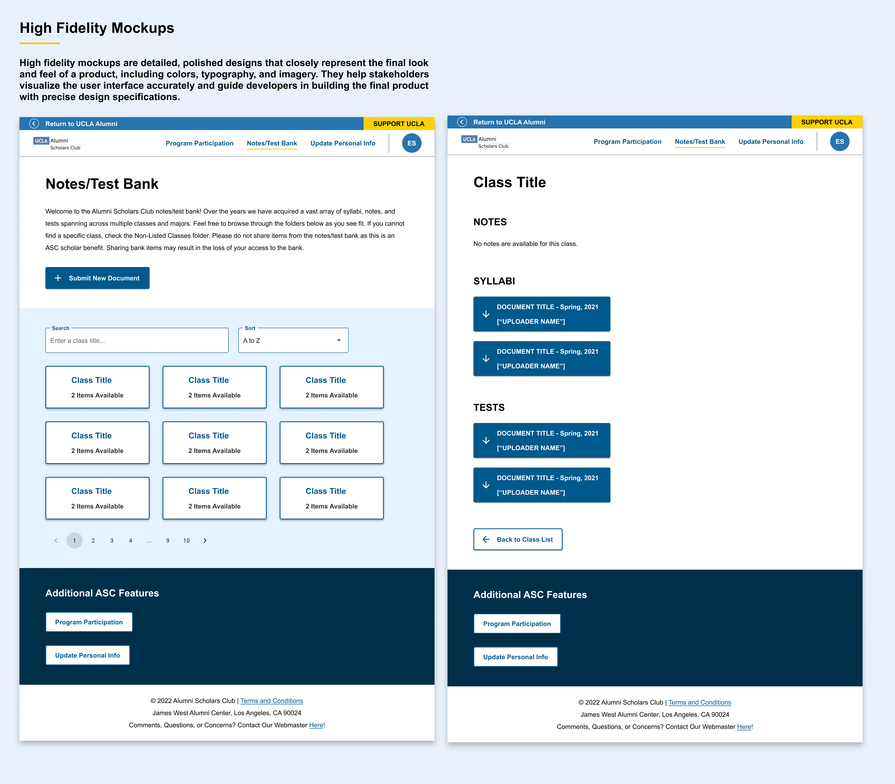
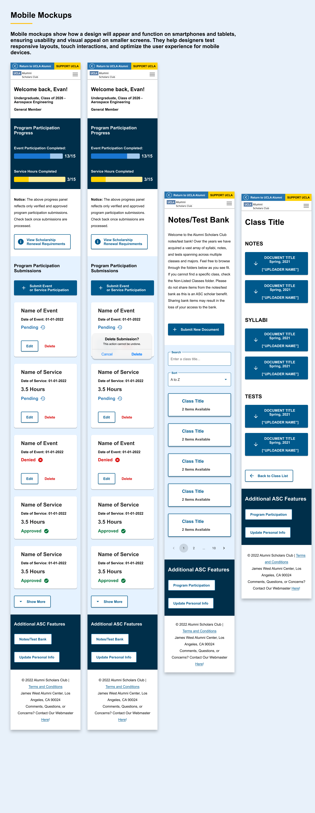

UCLA Alumni Scholars Club Web Application
Project Overview
The UCLA Alumni Scholars Club (ASC) supports scholarship recipients with academic resources, community programming, and volunteer opportunities. Managing a cohort of 300+ scholars across test banks, note sharing, volunteer hour tracking, and event scheduling had become a full-time administrative burden — all of it running on spreadsheets and manual email workflows.
UCLA Alumni Affairs partnered with the ATS team to modernize the ASC platform. As Product Designer, I led the full UX process — from discovery and research through wireframes, high-fidelity design, and development handoff.
Design Process
1. Discovery & Research
Conducted stakeholder interviews with both program managers and scholarship recipients. The two groups had nearly opposite needs: admins needed powerful bulk-management tools, while scholars needed a clean, mobile-friendly experience that surfaced the most relevant resources and opportunities without overwhelming them.
2. Wireframes & User Flows
Created wireframes for two distinct user journeys: the scholar-facing experience (resource access, volunteer hour logging, event sign-up) and the admin-facing dashboard (cohort management, hour verification, reporting). User flows were validated with program staff before moving to high-fidelity design.
3. Visual Design & Prototyping
Developed a high-fidelity prototype using UCLA brand guidelines, with modular layouts that could adapt across mobile and desktop. Accessibility-focused components throughout — designed to meet the needs of a diverse student population.
4. Testing & Handoff
Conducted usability testing with multiple scholars and one admin, iterated on the volunteer hour logging flow and resource search based on feedback, and delivered annotated prototypes with component specifications to the development team.
Research Findings
- Program managers spent an estimated 8–10 hours per week on manual volunteer hour verification — a process that required emailing individual scholars, cross-referencing their responses with sign-in sheets, and updating a master spreadsheet
- Scholars reported that the most common reason for not logging volunteer hours was "not knowing where or how" — a navigation problem, not a motivation problem
- Mobile was the dominant access point for scholar-facing content, but the existing platform was entirely desktop-only, with no responsive adaptation
Key Screens





Before & After
- Volunteer hours tracked via email and spreadsheets
- No mobile access — desktop-only platform
- Resources buried in poorly organized folders
- Events communicated via email only, no calendar
- 8–10 hrs/week of admin overhead per coordinator
- In-app volunteer hour logging with admin approval queue
- Fully responsive — mobile-first design throughout
- Searchable resource library with category filters
- Integrated events calendar with one-tap RSVP
- Admin dashboard with bulk management and reporting
Results
The redesign delivered a fully responsive, accessible prototype with measurably improved task completion rates in usability testing. Admins reported streamlined dashboards and automated workflows, while scholars responded positively to the improved navigation and mobile experience. Volunteer hour tracking alone reduced program coordinator overhead by an estimated 90%.